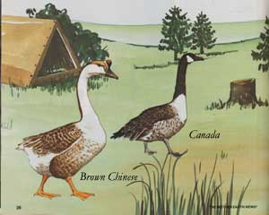
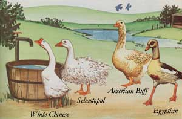
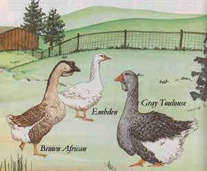

A good many rural folk-who successfully and happily keep chickens, goats, and such-wonder why anyone would put up with geese. And this is certainly a legitimate point of view for those individuals whose only experience with the temperamental waterfowl has involved facing an angry mob of them, snaky necks outstretched and beaks ready for action! Having had such an experience might well make you (or anyone else) balk at the notion of raising these seemingly irrational, sassy birds. You may be surprised to learn, though, that geese if managed kindly and well make terrific homestead companions.
Granted, these creatures are typically quite sensitive, and they tend to fly off the handle every now and then (especially when they feel that they or their young are being threatened), but on those occasions they make lots of noise . . . and can thus function as very effective watch birds. Furthermore, geese are meticulous lawn mowers (they're able to graze in hard-to-get-to places such as fencerows, ditches, and marshy areas) . . . voracious weeders (they'll gobble up crabgrass and many other undesirables that most other livestock refuse to touch) . . . and efficient pond cleaners (they can be used to help control unattractive surface algae and the like). Plus, their down and feathers can be used as stuffing for comforters, clothing, pillows, and so forth, and their succulent meat can serve as a hard-to-surpass main course favorite for holiday feasts.
CHOOSING THE RIGHTBREED FORYOU
People who are unfamiliar with the critters tend to think that geese are all pretty much the same, except that some are white and others are gray. Actually, though, the large fowl come in a wide assortment of shades and sizes, and each breed has its own distinctive characteristics. So if you're considering becoming a gooseherd, you might want to spend some time getting acquainted with the various breeds in order to determine which variety best suits your particular needs and locale. And, to help you get started, here are a few descriptions of some of the most popular light, medium, and heavyweight breeds as well as a couple of the ornamental varieties to tease your fancy. (See the editor's note for additional sources of information.)
LIGHTWEIGHTS
Swanlike White Chinese are one of the most attractive (and popular) breeds of domestic geese. Hailing originally from the Orient, these striking lightweights bear lush white plumage set off by brilliant blue eyes and a bright orange bill and legs . . . and they're also rapid maturers and prolific (for geese, at any rate) egg producers, laying from 40 to 100 or more a year! However, Chinese are a bit on the noisy side, so anyone planning on raising this variety should first consider whether he or she has enough space to allow a good distance between the flock and the neighbors.
Equally popular is the Brown Chinese, an elegant bird sporting rich brown and fawn feathers that are accentuated by a dark russet stripe down the neck and by an ebony bill and knob (bordered by a narrow band of creamy white plumes). Its shanks and feet are usually a deep orange, and its eyes are brown.
The Tufted Roman is another lightweight variety, a chubby white bird with a close-fitting helmetlike crest atop its head. A fair layer, it produces 25 to 35 eggs a year. An adult female weighs about ten pounds, whereas a male hits around 12. And, because of its characteristic plumpness, the Roman makes a fine, juicy table bird.
MEDIUMWEIGHTS
Sebastopols have been nicknamed the "peacocks" of goosedom, and for good reason: These modest-sized birds (the ganders tip the scales at about 14 pounds, and the geese at approximately 12) are covered with long, curling white feathers. However, because of their unique "attire", Sebastopols can be somewhat tricky to care for. They need lots of room and a large body of fresh water to keep their fine feathers in topnotch condition. Also, Sebastopols are not as hardy as most breeds, so they require protection against blustery winds and freezing rains when raised in colder climates. On the positive side, because they lack the ability to fly, they're relatively easy to keep penned up. And-although these birds are primarily raised as ornamentals or pets they do make good eating and produce from 25 to 35 eggs yearly.
The American Buff's unique coloring consisting of varying shades of yellow with a light fawn underbelly makes the bird one of the most showy breeds of the entire goose family. Furthermore, this fowl is typically hardy and calm . . . an attentive parent . . . and a fine medium-large (16- to 18-pound) roasting bird. The hen lays from 25 to 35 eggs a year.
The only goose breed in which gender can be determined by color is the Pilgrim (so named because it first came to America with Dutch immigrants in 1620). The female of this variety has hazel eyes and is a soft gray, except for its all white neck and head. The male has blue eyes and is completely white. These docile birds are hearty foragers and produce from 25 to 40 eggs per year. The goose generally weighs about 13 pounds and the gander 14, but don't be put off by the low poundage: This breed is a particularly tasty table treat!
HEAVYWEIGHTS
Bold, massive Africans are among the most handsome of geese, with the gander weighing in at close to 20 pounds and the goose at 18. This distinguished fowl has a deep, melodious voice (which, by the way, it uses often!), dignified movements, a wellproportioned body, a characteristic knob on its head, and coloring that's practically identical to that of the Brown Chinese . . . although a new line of white Africans is being bred. These big birds are good layers (20 to 45 eggs annually) . . rapid growers . . . and early maturers. And although they tend to be fairly small as compared with the other heavyweights, Africans are nonetheless a favorite among goose breeders.
The Toulouse, with a striking fold of skin-the dewlap-under its chin, acquired its name from the French village of Toulouse, which is noted for its goose production. This huge, blocky fowl is quiet and slow-moving, so it's easy to handle and to fatten up. Ganders usually weigh about 26 pounds and females around 20. The breed's egg production is generally 20 to 35 yearly, but sometimes as many as 60! Even so, since its egg fertility rate is very low, this breed doesn't reproduce consistently well. The birds are also hard to come by, expensive, and difficult to raise with any success.
Of all goose breeds (lights and mediums included), the Embden is the most frequently raised by commercial breeders. A large yet sprightly bird, this snow-white fowl is noted for its rapid growth rate, enormous size, and amazing fertility. Most adult males weigh around 26 pounds (the females average about 20), but some Embdens have been known to tip the scales at a whopping 30 pounds! Although this popular waddler's egg production averages 25 to 35 yearly, it lays predominantly fertile eggs. With everything the Embden's got going for it, it's little wonder that this portly bird is the hands-down favorite among professional fowl keepers!
ORNAMENTAL BREEDS
The graceful Canada goose is among the largest of the ornamentals, weighing from 10 to 12 pounds. And - although it's primarily a wild bird - it can be pinioned (by having the last joint of one wing clipped off to prevent long flights) and kept in captivity. However, this breed is high-strung and therefore somewhat difficult to care for. Also, if crossbred with a domestic gander, a Canada goose will produce sterile offspring.
Some authorities consider the Greylag to be the "great-granddaddy" of all domestic geese. And despite the fact that this small (four- to five-pound) wildfowl is an active roamer, it will hatch and care for its young in captivity.
The long-legged, small-bodied (4-1/2- to 51/2-pound) Egyptian geese are native to Africa and Southern Europe. They can be pinioned and raised in captivity as ornamentals, but because they're extremely illtempered, Egyptians are not recommended for novice goose raisers.
EDITOR'S NOTE: Books on raising geese are few, but here are a couple of sources you might want to check into: Keeping Domestic Geese by Barbara Soames from Sterling Publishing Co., and The Book of Geese by Dave Holderread from Hen House Publications.
|
 |
 |
 |